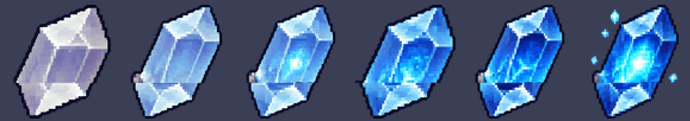

<title>부속품 그림 부탁</title>
<meta name="claude:viewport-fit-sides" content="cover">
<link rel="stylesheet" href="https://fonts.googleapis.com/css2?family=Do+Hyeon&family=IBM+Plex+Sans+KR:wght@400;600&display=swap">
<style>
/* 배치: 한 줄 흐름 — 머리 → 순서(번호: 실제 차례) → 붙일 그림 셋(그림 · 크게 보기 · 저장) → 부탁 글 넷(글 · 복사) → 받은 뒤 볼 것.
   색은 궁수 그림에서: 두건 초록 · 가죽 갈색 · 버클 금색. 그림은 밝은 회색 판 그대로 보인다 */
:root {
  --bg: #eeedf4; --surface: #f9f8fc; --panel: #dcd9e8; --fg: #1c1a26; --muted: #5a5770; --line: #c8c4d8;
  --accent: #2f6a3a; --accent-fg: #ffffff; --label: #7a5a0c; --sheet: #c8ccd6; --code: #f3f1f9;
  --font-display: "Do Hyeon", "Apple SD Gothic Neo", "Malgun Gothic", "Noto Sans KR", system-ui, sans-serif;
  --font-body: "IBM Plex Sans KR", "Apple SD Gothic Neo", "Malgun Gothic", "Noto Sans KR", system-ui, sans-serif;
  --font-data: ui-monospace, "SFMono-Regular", Menlo, Consolas, monospace;
}
@media (prefers-color-scheme: dark) { :root:not([data-theme="light"]) { --bg: #16151d; --surface: #1f1d29; --panel: #2e2b3c; --fg: #ebe7f2; --muted: #a39fb4; --line: #383548; --accent: #5ea852; --accent-fg: #ffffff; --label: #f0c45a; --sheet: #c8ccd6; --code: #1b1a24; color-scheme: dark } }
:root[data-theme="dark"] { --bg: #16151d; --surface: #1f1d29; --panel: #2e2b3c; --fg: #ebe7f2; --muted: #a39fb4; --line: #383548; --accent: #5ea852; --accent-fg: #ffffff; --label: #f0c45a; --sheet: #c8ccd6; --code: #1b1a24; color-scheme: dark }
*, *::before, *::after { box-sizing: border-box }
body { background: var(--bg); color: var(--fg); font-family: var(--font-body); font-size: 15px; line-height: 1.6; word-break: keep-all; overflow-wrap: break-word; padding-block: 28px 56px; padding-left: max(16px, env(safe-area-inset-left, 0px)); padding-right: max(16px, env(safe-area-inset-right, 0px)) }
.wrap { max-width: 820px; margin-inline: auto; display: grid; gap: 44px; grid-template-columns: minmax(0, 1fr) }
h1, h2, h3, p, ul, ol, figure, pre { margin: 0 }
ul, ol { padding: 0; list-style: none }
h1, h2 { font-family: var(--font-display); font-weight: 400; text-wrap: balance; line-height: 1.15 }
h1 { font-size: clamp(30px, 7vw, 42px) }
h2 { font-size: 24px }
h3 { font-size: 16px; font-weight: 600 }
.top { display: grid; gap: 10px }
.eyebrow { color: var(--label); font-size: 13px; font-weight: 600; letter-spacing: .04em }
.lede { max-width: 36em }
.sec { display: grid; gap: 18px; grid-template-columns: minmax(0, 1fr) }
.note { color: var(--muted); font-size: 14px; max-width: 44em }
.steps { counter-reset: n; display: grid; gap: 12px; max-width: 46em }
.steps li { counter-increment: n; padding-left: 34px; position: relative }
.steps li::before { content: counter(n); position: absolute; left: 0; top: 1px; width: 24px; height: 24px; display: grid; place-items: center; font: 400 15px/1 var(--font-display); background: var(--accent); color: var(--accent-fg); border-radius: 4px }
.item { display: grid; gap: 10px; grid-template-columns: minmax(0, 1fr) }
.item .what { display: grid; gap: 2px }
.row { display: flex; flex-wrap: wrap; gap: 8px; align-items: center }
.msg { color: var(--muted); font-size: 13px }
.msg:empty { display: none }
.btn { font: 600 14px/1 var(--font-body); padding: 11px 14px; border-radius: 6px; border: 1px solid var(--line); background: var(--surface); color: var(--fg); cursor: pointer }
.btn[aria-pressed="true"] { background: var(--fg); border-color: var(--fg); color: var(--bg) }
.btn.go { background: var(--accent); border-color: var(--accent); color: var(--accent-fg) }
.btn:disabled { opacity: .6; cursor: default }
.btn:focus-visible { outline: 2px solid var(--label); outline-offset: 2px }
.frame { overflow-x: auto; background: var(--sheet); border: 1px solid var(--line); border-radius: 8px }
.frame img { display: block; width: 100%; height: auto; image-rendering: pixelated }
.frame.zoomed img { width: var(--zw); max-width: none }
.frame.soft img { image-rendering: auto }
.attach { color: var(--label); font-size: 13px; font-weight: 600 }
.req { font: 13.5px/1.65 var(--font-body); white-space: pre-wrap; background: var(--code); border: 1px solid var(--line); border-radius: 8px; padding: 14px 16px; max-height: 22em; overflow: auto; -webkit-user-select: text; user-select: text }
.list { display: grid; gap: 10px; max-width: 46em }
.list li { padding-left: 18px; position: relative }
.list li::before { content: ""; position: absolute; left: 2px; top: .62em; width: 6px; height: 6px; background: var(--label) }

.mock { position: relative; width: 100%; aspect-ratio: 2172 / 724; container-type: inline-size; border: 2px solid #000; overflow: hidden; border-radius: 6px; background: #c9d6c2; }
.mock .b { position: absolute; left: 0; right: 0; display: flex; align-items: center; justify-content: center; text-align: center; font-size: 2.9cqw; line-height: 1.25; color: #f2f4e8; box-sizing: border-box; border-top: 1px dashed rgba(0, 0, 0, .45); padding: 0 1cqw; }
.pts { margin: 0; padding-left: 1.2em; display: grid; gap: 4px; }
</style><main class="wrap">
  <header class="top"><p class="eyebrow">미궁도시 라비린토스 · 부속품</p><h1>부속품 그림 부탁</h1><p class="lede">등급 재료 열두 가지와 마물육 스물여섯 가지를 GPT에서 뽑을 부탁 글 열 개입니다. 게임에는 이름과 드랍이 먼저 들어가 있고, 그림은 임시입니다.</p></header>
  <section class="sec"><div class="what item"><h2>GPT에 붙일 그림 2장</h2><p class="note">①은 보내 주신 재료 그림(화풍 기준), ②는 지금 게임의 마정석 여섯 등급(등급이 오르는 방식 기준)입니다.</p><p class="note" id="save-hint">저장 단추가 보이지 않으면 그림을 길게 눌러 저장해 주세요.</p></div>
    <div class="item"><div class="what"><h3>① 재료 그림 모음</h3><p class="note">모든 부탁에 붙입니다. 글자는 무시하고 재료 그림의 느낌만 따르라고 적어 두었습니다.</p></div><div class="frame soft" id="f-st"></div><div class="row"><button class="btn" type="button" data-zoom="f-st" aria-pressed="false">크게 보기</button><button class="btn go" type="button" data-save="ref_style.png" hidden>저장</button><span class="msg" role="status"></span></div></div>
    <div class="item"><div class="what"><h3>② 마정석 여섯 등급</h3><p class="note">등급 재료 부탁(1 ~ 6번)에만 붙입니다.</p></div><div class="frame soft" id="f-gr"></div><div class="row"><button class="btn" type="button" data-zoom="f-gr" aria-pressed="false">크게 보기</button><button class="btn go" type="button" data-save="ref_grade.png" hidden>저장</button><span class="msg" role="status"></span></div></div>
  </section>
  <section class="sec"><div class="what item"><h2>등급 재료 (1 ~ 6번)</h2><p class="note">마정석처럼 최하급부터 최상급까지 여섯 등급입니다. 가죽 · 비늘 셋 · 이끼 · 거미줄 · 광물은 말씀하신 것이고, 뼈 · 갑각 · 목재 · 섬유 · 깃털은 제가 더한 것입니다.</p></div><div class="item"><div class="what"><h3>1. 가죽 · 뼈</h3><p class="note">여섯 등급 두 줄.</p><p class="attach">붙일 그림: ① 재료 그림 모음 + ② 마정석 여섯 등급</p></div><pre class="req" id="req-1" tabindex="0">등급 재료 그림 — 가죽 · 뼈 (두 줄 × 6개)

붙인 그림 두 장: ① 재료 그림 모음 — 화풍과 「재료 덩이」 느낌의 기준. ② 마정석 여섯 등급 — 같은 물건이 등급마다 진해지는 방식의 기준.
게임에서 장비를 만드는 재료 「가죽」와 「뼈」을(를) 여섯 등급으로 그려 주세요.

첫째 줄 — 가죽
· 짐승에게서 벗긴 가죽 한 장(네 귀가 늘어진 펼친 가죽). 최하급: 얇고 해진 누런 가죽, 가장자리가 찢김 → 중급: 고른 갈색 가죽 → 최상급: 두껍고 윤기 나는 짙은 밤색 가죽, 고운 털결 무늬

둘째 줄 — 뼈
· 굵은 뼈 한 토막(양 끝이 둥근 뼈). 최하급: 금 가고 누렇게 바랜 가는 뼈 → 중급: 단단한 상아색 뼈 → 최상급: 희고 굵으며 은은히 빛나는 뼈

등급 그리는 법 (② 마정석 그림처럼)
· 한 줄의 여섯 개는 모두 같은 재료다: 같은 꼴, 같은 각도, 같은 색 계열
· 왼쪽이 최하급, 오른쪽으로 하급 · 중급 · 중상급 · 상급 · 최상급. 등급이 오를수록 색이 진해지고 결이 곱고 윤기가 난다. 최상급만 둘레에 작은 빛 조각 두세 개
· 여섯 개를 나란히 보면 「허름한 것 → 가장 좋은 것」으로 한 줄로 이어져 보여야 한다

크기
· 가로 : 세로 = 3 : 2 (예: 1800 × 1200). 가로 6칸 × 세로 2줄, 줄마다 재료 한 가지

공통 규격
· 도트 그림. 붙인 ① 재료 그림과 같은 느낌: 굵은 어두운 테두리, 또렷한 명암, 비스듬히 위에서 본 각도의 「재료 덩이」 한 개
· 바탕은 한 가지 색으로만 꽉 채운다: 선명한 자홍색 (#FF00FF). 칸 나눔 줄 · 번호 · 글자 · 그림자 없이
· 물건끼리 닿지 않게 같은 간격으로. 물건마다 크기를 비슷하게
· 붙인 그림에서는 화풍 · 크기 · 자리 나눔만 따른다 (그림 속 물건을 그대로 옮기지 않는다). ①에 적힌 글자와 금빛 틀은 무시하고 왼쪽의 재료 그림만 본다
· 다른 작품의 아이콘을 닮지 않게 새로 디자인한다</pre><div class="row"><button class="btn go" type="button" data-copy="req-1">글 복사</button><span class="msg" role="status"></span></div></div><div class="item"><div class="what"><h3>2. 파충류 비늘 · 용족 비늘</h3><p class="note">여섯 등급 두 줄.</p><p class="attach">붙일 그림: ① 재료 그림 모음 + ② 마정석 여섯 등급</p></div><pre class="req" id="req-2" tabindex="0">등급 재료 그림 — 파충류 비늘 · 용족 비늘 (두 줄 × 6개)

붙인 그림 두 장: ① 재료 그림 모음 — 화풍과 「재료 덩이」 느낌의 기준. ② 마정석 여섯 등급 — 같은 물건이 등급마다 진해지는 방식의 기준.
게임에서 장비를 만드는 재료 「파충류 비늘」와 「용족 비늘」을(를) 여섯 등급으로 그려 주세요.

첫째 줄 — 파충류 비늘
· 뱀 · 도마뱀의 비늘 조각 뭉치(겹쳐진 작은 비늘 여러 장이 붙은 가죽 조각). 최하급: 흐린 연두 잿빛, 비늘이 듬성듬성 → 중급: 또렷한 녹색 비늘 → 최상급: 짙은 청록 비늘이 촘촘하고 광택이 흐름

둘째 줄 — 용족 비늘
· 용 · 와이번의 큰 비늘 서너 장을 겹친 묶음(끝이 뾰족한 방패 꼴 비늘). 최하급: 옅은 벽돌색, 이가 빠짐 → 중급: 선명한 붉은 비늘 → 최상급: 짙은 진홍 비늘, 가장자리가 불씨처럼 빛남

등급 그리는 법 (② 마정석 그림처럼)
· 한 줄의 여섯 개는 모두 같은 재료다: 같은 꼴, 같은 각도, 같은 색 계열
· 왼쪽이 최하급, 오른쪽으로 하급 · 중급 · 중상급 · 상급 · 최상급. 등급이 오를수록 색이 진해지고 결이 곱고 윤기가 난다. 최상급만 둘레에 작은 빛 조각 두세 개
· 여섯 개를 나란히 보면 「허름한 것 → 가장 좋은 것」으로 한 줄로 이어져 보여야 한다

크기
· 가로 : 세로 = 3 : 2 (예: 1800 × 1200). 가로 6칸 × 세로 2줄, 줄마다 재료 한 가지

공통 규격
· 도트 그림. 붙인 ① 재료 그림과 같은 느낌: 굵은 어두운 테두리, 또렷한 명암, 비스듬히 위에서 본 각도의 「재료 덩이」 한 개
· 바탕은 한 가지 색으로만 꽉 채운다: 선명한 자홍색 (#FF00FF). 칸 나눔 줄 · 번호 · 글자 · 그림자 없이
· 물건끼리 닿지 않게 같은 간격으로. 물건마다 크기를 비슷하게
· 붙인 그림에서는 화풍 · 크기 · 자리 나눔만 따른다 (그림 속 물건을 그대로 옮기지 않는다). ①에 적힌 글자와 금빛 틀은 무시하고 왼쪽의 재료 그림만 본다
· 다른 작품의 아이콘을 닮지 않게 새로 디자인한다</pre><div class="row"><button class="btn go" type="button" data-copy="req-2">글 복사</button><span class="msg" role="status"></span></div></div><div class="item"><div class="what"><h3>3. 어류 비늘 · 깃털</h3><p class="note">여섯 등급 두 줄.</p><p class="attach">붙일 그림: ① 재료 그림 모음 + ② 마정석 여섯 등급</p></div><pre class="req" id="req-3" tabindex="0">등급 재료 그림 — 어류 비늘 · 깃털 (두 줄 × 6개)

붙인 그림 두 장: ① 재료 그림 모음 — 화풍과 「재료 덩이」 느낌의 기준. ② 마정석 여섯 등급 — 같은 물건이 등급마다 진해지는 방식의 기준.
게임에서 장비를 만드는 재료 「어류 비늘」와 「깃털」을(를) 여섯 등급으로 그려 주세요.

첫째 줄 — 어류 비늘
· 물고기 마물의 둥근 비늘 여러 장(부채꼴로 겹친 둥근 비늘). 최하급: 탁한 은회색 → 중급: 맑은 하늘빛 은색 → 최상급: 깊은 청색에 무지갯빛 윤기

둘째 줄 — 깃털
· 큰 깃털 두세 가닥 묶음. 최하급: 헝클어진 잿빛 깃털 → 중급: 가지런한 옅은 푸른 깃털 → 최상급: 크고 선명한 짙푸른 깃털, 끝이 빛남

등급 그리는 법 (② 마정석 그림처럼)
· 한 줄의 여섯 개는 모두 같은 재료다: 같은 꼴, 같은 각도, 같은 색 계열
· 왼쪽이 최하급, 오른쪽으로 하급 · 중급 · 중상급 · 상급 · 최상급. 등급이 오를수록 색이 진해지고 결이 곱고 윤기가 난다. 최상급만 둘레에 작은 빛 조각 두세 개
· 여섯 개를 나란히 보면 「허름한 것 → 가장 좋은 것」으로 한 줄로 이어져 보여야 한다

크기
· 가로 : 세로 = 3 : 2 (예: 1800 × 1200). 가로 6칸 × 세로 2줄, 줄마다 재료 한 가지

공통 규격
· 도트 그림. 붙인 ① 재료 그림과 같은 느낌: 굵은 어두운 테두리, 또렷한 명암, 비스듬히 위에서 본 각도의 「재료 덩이」 한 개
· 바탕은 한 가지 색으로만 꽉 채운다: 선명한 자홍색 (#FF00FF). 칸 나눔 줄 · 번호 · 글자 · 그림자 없이
· 물건끼리 닿지 않게 같은 간격으로. 물건마다 크기를 비슷하게
· 붙인 그림에서는 화풍 · 크기 · 자리 나눔만 따른다 (그림 속 물건을 그대로 옮기지 않는다). ①에 적힌 글자와 금빛 틀은 무시하고 왼쪽의 재료 그림만 본다
· 다른 작품의 아이콘을 닮지 않게 새로 디자인한다</pre><div class="row"><button class="btn go" type="button" data-copy="req-3">글 복사</button><span class="msg" role="status"></span></div></div><div class="item"><div class="what"><h3>4. 이끼 · 섬유</h3><p class="note">여섯 등급 두 줄.</p><p class="attach">붙일 그림: ① 재료 그림 모음 + ② 마정석 여섯 등급</p></div><pre class="req" id="req-4" tabindex="0">등급 재료 그림 — 이끼 · 섬유 (두 줄 × 6개)

붙인 그림 두 장: ① 재료 그림 모음 — 화풍과 「재료 덩이」 느낌의 기준. ② 마정석 여섯 등급 — 같은 물건이 등급마다 진해지는 방식의 기준.
게임에서 장비를 만드는 재료 「이끼」와 「섬유」을(를) 여섯 등급으로 그려 주세요.

첫째 줄 — 이끼
· 둥글게 뭉친 이끼 덩이(붙인 ①의 이끼 덩이와 비슷한 꼴). 최하급: 마르고 누런 푸석한 이끼 → 중급: 싱싱한 초록 이끼 → 최상급: 짙고 촉촉한 녹색 이끼, 이슬이 맺혀 반짝임

둘째 줄 — 섬유
· 식물 섬유 타래(덩굴 · 줄기 · 짚에서 뽑은 실 다발을 한 번 묶은 것). 최하급: 푸석한 누런 짚 다발 → 중급: 가지런한 연갈색 섬유 타래 → 최상급: 곱게 꼬아 윤이 나는 질긴 황금빛 타래

등급 그리는 법 (② 마정석 그림처럼)
· 한 줄의 여섯 개는 모두 같은 재료다: 같은 꼴, 같은 각도, 같은 색 계열
· 왼쪽이 최하급, 오른쪽으로 하급 · 중급 · 중상급 · 상급 · 최상급. 등급이 오를수록 색이 진해지고 결이 곱고 윤기가 난다. 최상급만 둘레에 작은 빛 조각 두세 개
· 여섯 개를 나란히 보면 「허름한 것 → 가장 좋은 것」으로 한 줄로 이어져 보여야 한다

크기
· 가로 : 세로 = 3 : 2 (예: 1800 × 1200). 가로 6칸 × 세로 2줄, 줄마다 재료 한 가지

공통 규격
· 도트 그림. 붙인 ① 재료 그림과 같은 느낌: 굵은 어두운 테두리, 또렷한 명암, 비스듬히 위에서 본 각도의 「재료 덩이」 한 개
· 바탕은 한 가지 색으로만 꽉 채운다: 선명한 자홍색 (#FF00FF). 칸 나눔 줄 · 번호 · 글자 · 그림자 없이
· 물건끼리 닿지 않게 같은 간격으로. 물건마다 크기를 비슷하게
· 붙인 그림에서는 화풍 · 크기 · 자리 나눔만 따른다 (그림 속 물건을 그대로 옮기지 않는다). ①에 적힌 글자와 금빛 틀은 무시하고 왼쪽의 재료 그림만 본다
· 다른 작품의 아이콘을 닮지 않게 새로 디자인한다</pre><div class="row"><button class="btn go" type="button" data-copy="req-4">글 복사</button><span class="msg" role="status"></span></div></div><div class="item"><div class="what"><h3>5. 거미줄 · 갑각</h3><p class="note">여섯 등급 두 줄.</p><p class="attach">붙일 그림: ① 재료 그림 모음 + ② 마정석 여섯 등급</p></div><pre class="req" id="req-5" tabindex="0">등급 재료 그림 — 거미줄 · 갑각 (두 줄 × 6개)

붙인 그림 두 장: ① 재료 그림 모음 — 화풍과 「재료 덩이」 느낌의 기준. ② 마정석 여섯 등급 — 같은 물건이 등급마다 진해지는 방식의 기준.
게임에서 장비를 만드는 재료 「거미줄」와 「갑각」을(를) 여섯 등급으로 그려 주세요.

첫째 줄 — 거미줄
· 거미줄 실타래(실을 감은 뭉치, 실 한 가닥이 풀려 나옴). 최하급: 엉키고 먼지 낀 잿빛 실뭉치 → 중급: 고르게 감긴 흰 실타래 → 최상급: 은보랏빛으로 빛나는 매끈한 실타래

둘째 줄 — 갑각
· 곤충 마물의 등딱지 조각(둥글게 휜 단단한 껍데기 판). 최하급: 금 가고 얇은 연갈색 껍데기 → 중급: 단단한 갈색 등딱지 → 최상급: 두껍고 검게 빛나는 등딱지, 가장자리에 쇠 같은 광택

등급 그리는 법 (② 마정석 그림처럼)
· 한 줄의 여섯 개는 모두 같은 재료다: 같은 꼴, 같은 각도, 같은 색 계열
· 왼쪽이 최하급, 오른쪽으로 하급 · 중급 · 중상급 · 상급 · 최상급. 등급이 오를수록 색이 진해지고 결이 곱고 윤기가 난다. 최상급만 둘레에 작은 빛 조각 두세 개
· 여섯 개를 나란히 보면 「허름한 것 → 가장 좋은 것」으로 한 줄로 이어져 보여야 한다

크기
· 가로 : 세로 = 3 : 2 (예: 1800 × 1200). 가로 6칸 × 세로 2줄, 줄마다 재료 한 가지

공통 규격
· 도트 그림. 붙인 ① 재료 그림과 같은 느낌: 굵은 어두운 테두리, 또렷한 명암, 비스듬히 위에서 본 각도의 「재료 덩이」 한 개
· 바탕은 한 가지 색으로만 꽉 채운다: 선명한 자홍색 (#FF00FF). 칸 나눔 줄 · 번호 · 글자 · 그림자 없이
· 물건끼리 닿지 않게 같은 간격으로. 물건마다 크기를 비슷하게
· 붙인 그림에서는 화풍 · 크기 · 자리 나눔만 따른다 (그림 속 물건을 그대로 옮기지 않는다). ①에 적힌 글자와 금빛 틀은 무시하고 왼쪽의 재료 그림만 본다
· 다른 작품의 아이콘을 닮지 않게 새로 디자인한다</pre><div class="row"><button class="btn go" type="button" data-copy="req-5">글 복사</button><span class="msg" role="status"></span></div></div><div class="item"><div class="what"><h3>6. 목재 · 광물</h3><p class="note">여섯 등급 두 줄.</p><p class="attach">붙일 그림: ① 재료 그림 모음 + ② 마정석 여섯 등급</p></div><pre class="req" id="req-6" tabindex="0">등급 재료 그림 — 목재 · 광물 (두 줄 × 6개)

붙인 그림 두 장: ① 재료 그림 모음 — 화풍과 「재료 덩이」 느낌의 기준. ② 마정석 여섯 등급 — 같은 물건이 등급마다 진해지는 방식의 기준.
게임에서 장비를 만드는 재료 「목재」와 「광물」을 여섯 등급으로 그려 주세요.

첫째 줄 — 목재
· 나무 마물에게서 얻은 통나무 토막(자른 면에 나이테가 보임). 최하급: 마르고 갈라진 가는 가지 토막 → 중급: 단단한 갈색 통나무 토막 → 최상급: 결이 곱고 짙은 통나무, 나이테가 은은히 빛남

둘째 줄 — 광물
· 골렘이나 광물을 몸에 품은 마물에게서 캐낸 광물 덩이(모난 원석 한 덩이, 쇠붙이 결이 박혀 있음). 수정처럼 투명한 돌이 아니라 불투명한 쇳돌이다. 최하급: 잿빛 돌에 쇳빛 점이 드문드문 → 중급: 푸른 잿빛 쇠 결이 굵게 박힌 원석 → 최상급: 짙은 청회색 금속 결이 덩이 전체에 흐르고 모서리가 날카롭게 빛남

등급 그리는 법 (② 마정석 그림처럼)
· 한 줄의 여섯 개는 모두 같은 재료다: 같은 꼴, 같은 각도, 같은 색 계열
· 왼쪽이 최하급, 오른쪽으로 하급 · 중급 · 중상급 · 상급 · 최상급. 등급이 오를수록 색이 진해지고 결이 곱고 윤기가 난다. 최상급만 둘레에 작은 빛 조각 두세 개
· 여섯 개를 나란히 보면 「허름한 것 → 가장 좋은 것」으로 한 줄로 이어져 보여야 한다

크기
· 가로 : 세로 = 3 : 2 (예: 1800 × 1200). 가로 6칸 × 세로 2줄, 줄마다 재료 한 가지

공통 규격
· 도트 그림. 붙인 ① 재료 그림과 같은 느낌: 굵은 어두운 테두리, 또렷한 명암, 비스듬히 위에서 본 각도의 「재료 덩이」 한 개
· 바탕은 한 가지 색으로만 꽉 채운다: 선명한 자홍색 (#FF00FF). 칸 나눔 줄 · 번호 · 글자 · 그림자 없이
· 물건끼리 닿지 않게 같은 간격으로. 물건마다 크기를 비슷하게
· 붙인 그림에서는 화풍 · 크기 · 자리 나눔만 따른다 (그림 속 물건을 그대로 옮기지 않는다). ①에 적힌 글자와 금빛 틀은 무시하고 왼쪽의 재료 그림만 본다
· 다른 작품의 아이콘을 닮지 않게 새로 디자인한다</pre><div class="row"><button class="btn go" type="button" data-copy="req-6">글 복사</button><span class="msg" role="status"></span></div></div></section>
  <section class="sec"><div class="what item"><h2>마물육 (7 ~ 10번)</h2><p class="note">몬스터마다 하나씩입니다. 허수아비는 벼, 사람 꼴인 라헨은 없습니다.</p></div><div class="item"><div class="what"><h3>7. 평원 마물육 7개</h3><p class="note">몬스터마다 하나씩인 먹는 부위.</p><p class="attach">붙일 그림: ① 재료 그림 모음</p></div><pre class="req" id="req-7" tabindex="0">평원 마물육 7개

붙인 그림: ① 재료 그림 모음 — 화풍과 크기의 기준.
몬스터에게서 얻는 먹을 수 있는 부위 「마물육」을 그려 주세요. 요리 재료로 쓰는 날것입니다 (익히지 않은 상태, 접시 없이 재료만).

그릴 것 (왼쪽 위부터 차례로)
1. 들쥐 고기: 작고 질긴 붉은 살코기 두 점
2. 뿔토끼 안심살: 연분홍빛 길쭉한 안심 한 덩이
3. 들늑대 뒷다리살: 뼈가 붙은 짙은 붉은 다리살
4. 벼: 낟알이 달린 누런 벼 이삭 한 묶음 (고기가 아니다)
5. 멧돼지 삼겹살: 비계와 살이 층층인 두툼한 삼겹살
6. 갑옷 멧돼지 갈빗살: 갈비뼈 서너 대가 붙은 갈빗살
7. 들쥐왕 등심: 기름이 고르게 낀 큰 등심 한 덩이

크기
· 가로 4칸 × 세로 2줄 (마지막 칸은 비움). 가로 : 세로 = 2 : 1 (예: 1600 × 800)

공통 규격
· 도트 그림. 붙인 ① 재료 그림과 같은 느낌: 굵은 어두운 테두리, 또렷한 명암, 비스듬히 위에서 본 각도의 「재료 덩이」 한 개
· 바탕은 한 가지 색으로만 꽉 채운다: 선명한 자홍색 (#FF00FF). 칸 나눔 줄 · 번호 · 글자 · 그림자 없이
· 물건끼리 닿지 않게 같은 간격으로. 물건마다 크기를 비슷하게
· 붙인 그림에서는 화풍 · 크기 · 자리 나눔만 따른다 (그림 속 물건을 그대로 옮기지 않는다). ①에 적힌 글자와 금빛 틀은 무시하고 왼쪽의 재료 그림만 본다
· 다른 작품의 아이콘을 닮지 않게 새로 디자인한다</pre><div class="row"><button class="btn go" type="button" data-copy="req-7">글 복사</button><span class="msg" role="status"></span></div></div><div class="item"><div class="what"><h3>8. 원시림 마물육 8개</h3><p class="note">몬스터마다 하나씩인 먹는 부위.</p><p class="attach">붙일 그림: ① 재료 그림 모음</p></div><pre class="req" id="req-8" tabindex="0">원시림 마물육 8개

붙인 그림: ① 재료 그림 모음 — 화풍과 크기의 기준.
몬스터에게서 얻는 먹을 수 있는 부위 「마물육」을 그려 주세요. 요리 재료로 쓰는 날것입니다 (익히지 않은 상태, 접시 없이 재료만).

그릴 것 (왼쪽 위부터 차례로)
1. 덩굴 뱀 몸통살: 껍질을 벗긴 흰 뱀 살 토막
2. 식충 꽃 줄기 속살: 속이 연둣빛인 굵은 줄기 토막
3. 그루터기 새순: 연한 초록 새순 서너 개 묶음
4. 점박이 버섯 기둥살: 갓을 뗀 통통한 흰 버섯 기둥
5. 철갑 풍뎅이 속살: 껍데기 반쪽에 담긴 흰 살
6. 바위 버섯: 돌 조각에 붙은 갈색 버섯 두세 송이
7. 수호령의 이슬 열매: 가지 끝에 맺힌 맑은 연두 열매
8. 트렌트 수액: 나무껍질 그릇에 담긴 호박색 진한 수액

크기
· 가로 4칸 × 세로 2줄. 가로 : 세로 = 2 : 1 (예: 1600 × 800)

공통 규격
· 도트 그림. 붙인 ① 재료 그림과 같은 느낌: 굵은 어두운 테두리, 또렷한 명암, 비스듬히 위에서 본 각도의 「재료 덩이」 한 개
· 바탕은 한 가지 색으로만 꽉 채운다: 선명한 자홍색 (#FF00FF). 칸 나눔 줄 · 번호 · 글자 · 그림자 없이
· 물건끼리 닿지 않게 같은 간격으로. 물건마다 크기를 비슷하게
· 붙인 그림에서는 화풍 · 크기 · 자리 나눔만 따른다 (그림 속 물건을 그대로 옮기지 않는다). ①에 적힌 글자와 금빛 틀은 무시하고 왼쪽의 재료 그림만 본다
· 다른 작품의 아이콘을 닮지 않게 새로 디자인한다</pre><div class="row"><button class="btn go" type="button" data-copy="req-8">글 복사</button><span class="msg" role="status"></span></div></div><div class="item"><div class="what"><h3>9. 깊은 숲 마물육 8개</h3><p class="note">몬스터마다 하나씩인 먹는 부위.</p><p class="attach">붙일 그림: ① 재료 그림 모음</p></div><pre class="req" id="req-9" tabindex="0">깊은 숲 마물육 8개

붙인 그림: ① 재료 그림 모음 — 화풍과 크기의 기준.
몬스터에게서 얻는 먹을 수 있는 부위 「마물육」을 그려 주세요. 요리 재료로 쓰는 날것입니다 (익히지 않은 상태, 접시 없이 재료만).

그릴 것 (왼쪽 위부터 차례로)
1. 반딧불 꿀주머니: 은은히 빛나는 작은 청록 꿀주머니
2. 이끼 도마뱀 꼬리살: 통통한 꼬리 토막, 겉에 이끼 조금
3. 뿌리 지네 마디살: 마디 껍질 속의 분홍 살 서너 점
4. 빛가루 나방 배살: 빛가루가 묻은 뽀얀 살 한 덩이
5. 에테르 버섯 기둥살: 청록빛이 도는 버섯 기둥
6. 수정 사슴벌레 속살: 수정 껍데기 조각에 담긴 탱탱한 살
7. 고목 수액: 나무 대롱에 담긴 맑은 수액
8. 고룡목 열매: 청록빛으로 빛나는 큰 열매 한 알

크기
· 가로 4칸 × 세로 2줄. 가로 : 세로 = 2 : 1 (예: 1600 × 800)

공통 규격
· 도트 그림. 붙인 ① 재료 그림과 같은 느낌: 굵은 어두운 테두리, 또렷한 명암, 비스듬히 위에서 본 각도의 「재료 덩이」 한 개
· 바탕은 한 가지 색으로만 꽉 채운다: 선명한 자홍색 (#FF00FF). 칸 나눔 줄 · 번호 · 글자 · 그림자 없이
· 물건끼리 닿지 않게 같은 간격으로. 물건마다 크기를 비슷하게
· 붙인 그림에서는 화풍 · 크기 · 자리 나눔만 따른다 (그림 속 물건을 그대로 옮기지 않는다). ①에 적힌 글자와 금빛 틀은 무시하고 왼쪽의 재료 그림만 본다
· 다른 작품의 아이콘을 닮지 않게 새로 디자인한다</pre><div class="row"><button class="btn go" type="button" data-copy="req-9">글 복사</button><span class="msg" role="status"></span></div></div><div class="item"><div class="what"><h3>10. 뿌리굴 마물육 3개</h3><p class="note">몬스터마다 하나씩인 먹는 부위.</p><p class="attach">붙일 그림: ① 재료 그림 모음</p></div><pre class="req" id="req-10" tabindex="0">뿌리굴 마물육 3개

붙인 그림: ① 재료 그림 모음 — 화풍과 크기의 기준.
몬스터에게서 얻는 먹을 수 있는 부위 「마물육」을 그려 주세요. 요리 재료로 쓰는 날것입니다 (익히지 않은 상태, 접시 없이 재료만).

그릴 것 (왼쪽 위부터 차례로)
1. 만드라고라 뿌리살: 인삼처럼 갈래 진 뿌리 토막 (얼굴은 그리지 않는다)
2. 요정의 이슬꿀: 꽃잎 그릇에 담긴 옅은 금빛 꿀
3. 검은 수액 열매: 검보랏빛 수액이 굳어 맺힌 열매

크기
· 가로 한 줄 3칸. 가로 : 세로 = 3 : 1 (예: 1500 × 500)

공통 규격
· 도트 그림. 붙인 ① 재료 그림과 같은 느낌: 굵은 어두운 테두리, 또렷한 명암, 비스듬히 위에서 본 각도의 「재료 덩이」 한 개
· 바탕은 한 가지 색으로만 꽉 채운다: 선명한 자홍색 (#FF00FF). 칸 나눔 줄 · 번호 · 글자 · 그림자 없이
· 물건끼리 닿지 않게 같은 간격으로. 물건마다 크기를 비슷하게
· 붙인 그림에서는 화풍 · 크기 · 자리 나눔만 따른다 (그림 속 물건을 그대로 옮기지 않는다). ①에 적힌 글자와 금빛 틀은 무시하고 왼쪽의 재료 그림만 본다
· 다른 작품의 아이콘을 닮지 않게 새로 디자인한다</pre><div class="row"><button class="btn go" type="button" data-copy="req-10">글 복사</button><span class="msg" role="status"></span></div></div></section>
</main>
<script>
const $$ = s => Array.from(document.querySelectorAll(s));
const msgOf = b => b.parentElement.querySelector('.msg');
const W = { 'f-st': 710, 'f-gr': 1150 };
$$('[data-zoom]').forEach(b => { const f = document.getElementById(b.dataset.zoom); f.style.setProperty('--zw', W[b.dataset.zoom] + 'px');
  b.addEventListener('click', () => { const on = f.classList.toggle('zoomed'); b.setAttribute('aria-pressed', on ? 'true' : 'false'); }); });
// 글 복사: 안 되면 글을 골라 둔다
$$('[data-copy]').forEach(b => b.addEventListener('click', async () => {
  const pre = document.getElementById(b.dataset.copy), msg = msgOf(b);
  try { await navigator.clipboard.writeText(pre.textContent); msg.textContent = '복사했습니다.'; }
  catch (_) { const r = document.createRange(); r.selectNodeContents(pre); const s = window.getSelection(); s.removeAllRanges(); s.addRange(r); pre.focus(); msg.textContent = '여기서는 바로 복사가 안 됩니다. 글을 골라 두었으니 길게 눌러 복사해 주세요.'; }
}));
// 저장 (보는 쪽에서 저장을 받아 줄 때만 단추를 보인다)
(async () => {
  let dl = null;
  try { dl = window.claude && window.claude.use ? await window.claude.use('downloads') : null; } catch (_) { dl = null; }
  if (!dl) return;
  document.getElementById('save-hint').hidden = true;
  $$('[data-save]').forEach(b => { b.hidden = false; b.addEventListener('click', async () => {
    const msg = msgOf(b); b.disabled = true; msg.textContent = '';
    try { const blob = await (await fetch(b.dataset.save)).blob(); await dl.save({ filename: b.dataset.save, data: blob }); msg.textContent = '저장했습니다.'; }
    catch (e) { const c = e && e.code; msg.textContent = c === 'declined' ? '저장을 취소했습니다.' : c === 'rate_limited' ? '잠시 뒤에 다시 눌러 주세요.' : '여기서는 저장할 수 없습니다. 그림을 길게 눌러 저장해 주세요.'; }
    b.disabled = false; }); });
})();
</script>